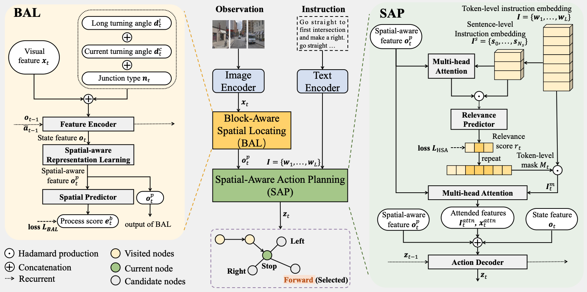
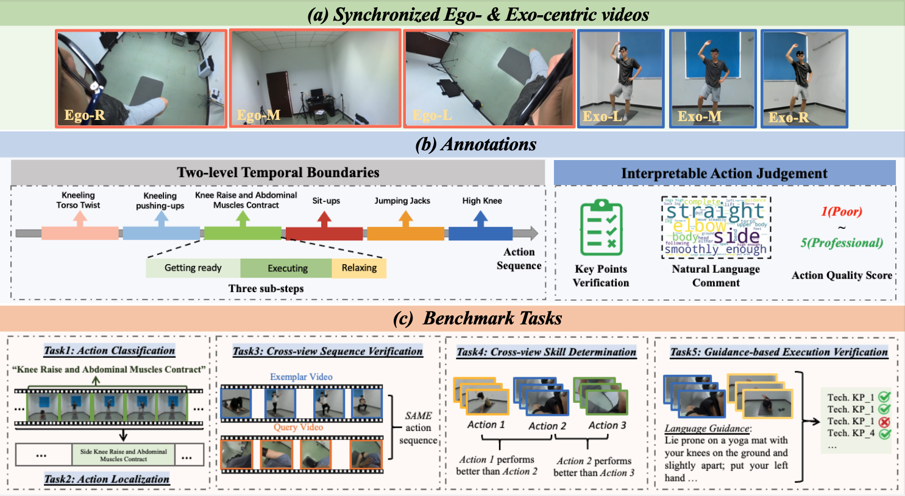
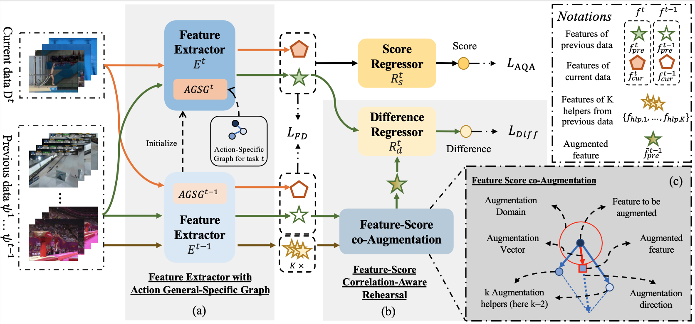

|
Yuan-Ming Li
I am currently a second-year Ph.D student at Sun Yat-sen University (SYSU) advised by Prof. Wei-Shi Zheng.
Before coming to SYSU, I obtained my B.E. degree at the University of Electronic Science and Technology of China.
My research interests mainly lie around Computer Vision, with the goal of developing general and generalizable vision systems.
My main research focuses on Video Action Understanding.
In the following years, I will focus on Interpretable Action Assessment and Egocentric Action Understanding. And I am always open for research discussions and collaborations.
Email /
Google Scholar /
Github
|
|
News
|
|
[07/16/2024] 1 paper is accepted by ACMMM 2024.
|
|
[07/01/2024] 1 paper is accepted by ECCV 2024.
|
|
[04/26/2024] 1 paper is accepted by TCSVT 2024.
|
Publications
‡: Project lead; †: Equal Contributions; *: Corresponding Authors.
|
|

|
Loc4Plan: Locating Before Planning for Outdoor Vision and Language Navigation
Hui-Lin Tian,
Jing-Ke Meng*,
Yuan-Ming Li,
Jun-Kai Yan,
Yu-Nong Zhang,
Wei-Shi Zheng
The ACM Multimedia (ACMMM), 2024
|
|

|
EgoExo-Fitness: Towards Egocentric and Exocentric Full-Body Action Understanding
Yuan-Ming Li‡†,
Wei-Jin Huang†,
An-Lan Wang†,
Ling-An Zeng,
Jing-Ke Meng*,
Wei-Shi Zheng*
The European Conference on Computer Vision (ECCV), 2024
|
|

|
Continual Action Assessment via Task-Consistent Score-Discriminative Feature Distribution Modeling
Yuan-Ming Li,
Ling-An Zeng,
Jing-Ke Meng*,
Wei-Shi Zheng*
IEEE Transactions on Circuits and Systems for Video Technology (TCSVT), 2024
|
Academic Service
Conference Reviewer: NeurIPS2024, ECCV2024, CVPR2024
Journal Reviewer: TPAMI
|
|